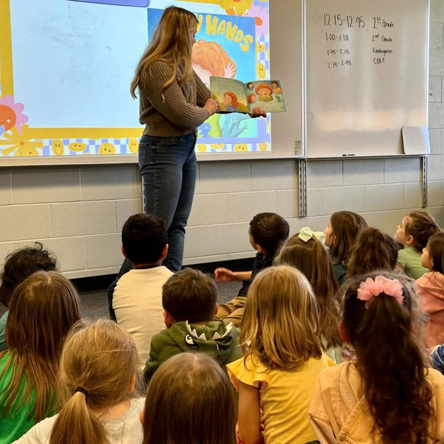

En Down Sin Barreras ofrecemos programas diseñados para acompañar, guiar y fortalecer a las personas con Síndrome de Down y a sus familias, desde la primera infancia hasta la vida adulta.
Nuestro objetivo es brindar apoyo integral para promover la autonomía, el aprendizaje y la inclusión social.

Ingreso y apoyo para las familias
Acompañamos a las familias desde el momento del diagnóstico, ofreciendo orientación emocional, asesoría y espacios de encuentro con otras familias que viven experiencias similares.
Buscamos construir redes de apoyo que fortalezcan el vínculo familiar y promuevan la aceptación y el amor incondicional.

Apoyo a la primera infancia
Ofrecemos programas que estimulan el desarrollo físico, cognitivo y emocional de los niños en sus primeros años.
Nuestro equipo profesional trabaja junto a los padres para favorecer una crianza activa y amorosa que potencie las capacidades de cada niño.

Fisioterapia
La fisioterapia ayuda a mejorar el tono muscular, la coordinación y el equilibrio. Con ejercicios personalizados,
promovemos la movilidad y la independencia física desde las primeras etapas del desarrollo.

Estimulación temprana
Programa dirigido a bebés y niños pequeños que busca potenciar sus capacidades sensoriales,
motrices y cognitivas mediante actividades lúdicas y dinámicas adaptadas a sus necesidades individuales.

Entrenamiento cognitivo y motricidad
Actividades diseñadas para fortalecer la atención, memoria, coordinación y habilidades motoras finas y gruesas,
favoreciendo la autonomía y la participación activa en el entorno escolar y familiar.

Terapia ocupacional
Apoyamos el desarrollo de habilidades para la vida diaria, fomentando la independencia en tareas como vestirse,
alimentarse y realizar actividades cotidianas, siempre desde un enfoque funcional y motivador.

Apoyo a jóvenes
Acompañamos a los jóvenes en su proceso de formación personal y social.
Promovemos su inclusión en espacios educativos, laborales y comunitarios, impulsando sus talentos y metas personales.

Próximos eventos
Organizamos actividades, talleres y jornadas de sensibilización dirigidas a las familias,
voluntarios y comunidad en general. Estos espacios fomentan la inclusión, el aprendizaje y la celebración de la diversidad.

Otros servicios
Además, contamos con asesorías psicológicas, orientación pedagógica y programas de acompañamiento para padres y cuidadores,
buscando fortalecer el bienestar integral de todos los miembros de la familia.